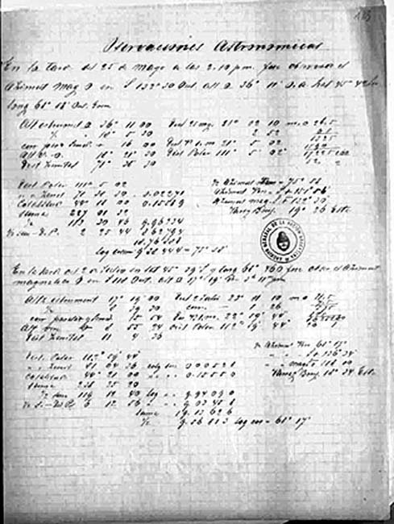

|
|  |
|
Carlos Ameghino, Observaciones meteorológicas y astrológicas
|
To build an archive of 'national' nature, however, not only implied the construction of a landscape canon –a 'system of sights', in the words of cultural historian Dean MacCannell, which on the margins of maps or on the pages of lithographic and photographic albums prepared for display at the world´s fairs and elsewhere, provided a synoptic image of the variety and vastness of national space–; it also entailed the collection of 'raw data' on behalf of scientific explorers sent into the deep interior, the margins and disinhabited extensions of national territory. The Ameghino brothers –Carlos and Florentino– were among the generation of Argentine naturalists who had studied with Burmeister at Buenos Aires´ Museo Público, and went on to work for the newly-founded Museo Nacional and Museo de La Plata after 1880. It is by no means accidental that state consolidation occurred in parallel form to this assemblage of an archive of geographical, zoological, botanical and demographic body of knowledge: state power, as Thomas Richards has shown in his work on the 'archival politics' of the British empire, relies on the capacity of breaking the social and natural world up into elements that can be translated into 'data' and thus processed into 'facts' that can be transported and accumulated in the archive.
|